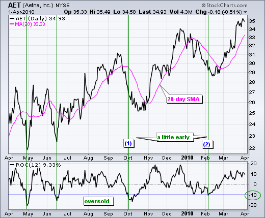
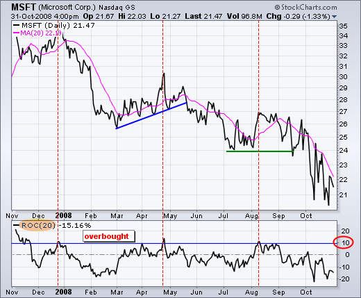
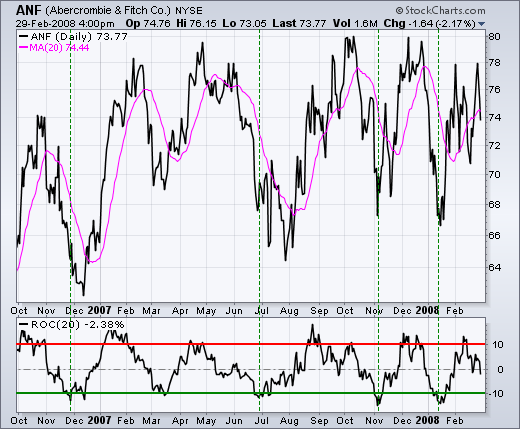

Chỉ báo ROC (Rate of Change)
Chỉ báo ROC (Rate of Change) được xem như là chỉ báo động lượng, nó thể hiện sự thay đổi phần trăm giá cổ phiếu. Nó được tính toán dựa trên việc so sánh giá cổ phiếu hiện tại với giá của một thời kỳ trước đó.
ROC = 100*(CLOSE - CLOSE_n)/CLOSE_n
trong đó CLOSE là giá hiện tại, CLOSE_n là giá của "n" ngày trước đó.
Phân tích
Chỉ báo ROC là một momentum của thay đổi giá cổ phiếu. Nhìn chung, giá cổ phiếu là tăng khi chỉ báo ROC đi lên và giá cố phiếu có xu
hướng giảm khi chỉ báo ROC đi xuống.
Quá mua/quá bán
Có ba xu hướng giá cơ bản: tăng, giảm và sideways. Các chỉ báo Momentum thường chỉ báo tốt trong giai đoạn giá cổ phiếu sideways do các điểm quá mua/quá bán chuẩn xác hơn và cũng dễ dàng dự báo điểm quay đầu của giá cổ phiếu. Tuy nhiên trong giai đoạn tăng/giảm thì cổ phiếu cũng có thể sideways theo hướng zigzag đi lên hay đi xuống. Khi đó chỉ báo momentum cũng được sử dụng để dự báo các điểm quá mua/bán hay điểm quay đầu. Trong trường hợp này ROC được sử dụng để xác định các giai đoạn giá lên xuống khi ROC (phần trăm thay đổi) chạm vào một ngưỡng nào đó.

Hình trên minh họa cổ phiếu AET với một uptren từ tháng 4/2009 đến 4/2010. Trong giai đoạn uptrend này thì cổ phiếu vẫn đi theo kiểu zigzag khi
tạo thành nhiều đỉnh và đấy cao dần. Ở đây ROC được sử dụng để xác định các điểm quá bán theo trung hạn. Để ý ở đây, đường -10% được
sử dụng như là ngưỡng để xác định thời điểm quá bán. Trong thực tế thì đường này có thể thay đổi tùy theo tình hình biến động của giá cổ
phiếu.
Điểm quá bán được sử dụng để cảnh báo thời điểm quay đầu đi lên của giá cổ phiếu, tuy nhiên cũng có thể giá cổ phiếu vẫn tiếp tục đi xuống.
Trong ví dụ này, đường SMA-20 được sử dụng để củng cố thêm tín hiệu. Khi cổ phiếu rơi vào tình trạng quá bán vào tháng 10/2009 và khi đường
giá cắt trên đường SMA-20 vào cuối tháng 10. Khi đó có thể khẳng định chắc chắn hơn về xu hướng đi lên của giá cổ phiếu. Tương tự trường
hợp quá bán khác rơi vào tháng 2/2010.

Hình 2 minh họa cổ phiếu Microsoft với downtrend từ tháng 11/2007 đến tháng 11/2008. Chỉ báo ROC(20) được sử dụng để xác định các điểm quá mua. Giá cổ phiếu cuối tháng 12/2007 chạm đường +10%, điều này có nghĩa là cổ phiếu đã tăng 10% so với 20 ngày trước (1 tháng) đó. Điểm quá mua 10% lần tiếp theo chỉ đến tận tháng 4/2008 mới xuất hiện. Đường giá phá vỡ đường hỗ trợ (đường kẻ xanh blue) vào tháng 5/2008 để tiếp tục downtrend.

Hình 3 minh họa cổ phiếu Abercrombie & Fitch(ANF) trong giai đoạn từ tháng 10/2006 đến 2/2008. ROC(20) được sử dụng với 2 đường +10% và -10%. Trong ví dụ này, các điểm quá bán/quá mua được ROC(20) dự báo khá tốt.
Kết luận
Chỉ báo ROC cho các điểm quá bán, quá mua tương đối tốt, nhất là đối với giai đoạn cổ phiếu sideways. Nên kết hợp với một số chỉ báo khác để xác thời điểm giá cổ phiếu quay đầu chính xác hơn.